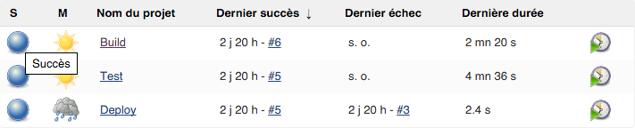
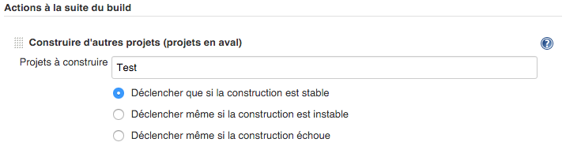

Jenkins Workflow
Jean Detoeuf
Concepteur-développeur
Passionné de nouvelles technologies
#jvm #docker #craftmanship #diy
Sondage
- Intégration continue
- Déploiement continu
Intégration Continue
Jenkins/Hudson

Et beaucoup d'autres
Pourquoi Jenkins ?
- CI le plus utilisé
- Extensible
- Stable
- Open Source
- Communauté
Jobs classiques

Comment enchaîner du build au deploy ?
Histoire de faire du déploiement continu
En chainant les jobs

Oui, mais pour suivre l'enchaînement ?
Avec le pipeline plugin !

Problème
- Complexe à mettre en oeuvre
- On finit par avoir des jobs "étapes"
- File d'exécution impossible à lire
- Un job a des successeurs prédéterminés
- Le paramétrage se fait dans Jenkins
Solution peu utilisable pour du déploiement continu
Jenkins et le déploiement continu
Déploiement Continu
Le but du déploiement continu est d'avoir une application stable en production.
Pour ce faire, la chaine de livraison doit être automatisée au maximum pour réduire le travail entre une modification de code et sa livraison en production.
Quel intervale de temps entre deux MEP ?
Ce n'est pas le but premier du déploiement continu.
Pouvoir livrer rapidement ne veut pas dire livrer régulièrement.
Go Delivery
- Un build est composé d'étapes
- Chaque build peut être appliqué à un environnement
- Fan-out-in (parallelisation des étapes)
Capture d'écran de Go Delivery
Bonnes idées
- Parallelisation des étapes
- Environnements de déploiement
- Visualisation du build et de l'étape en cours
Problèmes
- Configuration gérée dans l'outil
- Pas de possibilité de scripter le job
- Difficulté pour gérer plusieurs versions nécessitant des jobs différents
Jenkins Workflow plugin
Plugin(s)
- Ajout à une installation existante
- Nouveau type de job
image de configuration de workflow
Scripter le job
et mettre le script avec les sources
Jenkinsfile
Fichier de build en Groovy
Exprimer tout ce que pouvait faire un job simplement
Ajouter des principes supplémentaires
Convention de nommage pour éviter d'indiquer le nom en configuration du job
node {
git url: 'https://github.com/spring-projects/spring-petclinic.git'
def mvnHome = tool 'M3'
sh "${mvnHome}/bin/mvn -B verify"
}
Jenkinsfile
- Le base de code déclare elle-même comment s'installer
- Différentes versions (tags/branches/commits) peuvent avoir des manières différentes de s'installer
node {
git url: 'https://github.com/spring-projects/spring-petclinic.git'
def mvnHome = tool 'M3'
sh "${mvnHome}/bin/mvn -B verify"
}
Actions disponibles
Echo (print)
echo 'Compilation'Commande shell
sh 'ls /tmp'bat 'dir C:\tmp'try-catch-finally
try {
checkpoint('Before production')
} catch (NoSuchMethodError _) {
echo 'Checkpoint feature available in CloudBees Jenkins Enterprise.'
}
Outils
def mvn(args) {
sh "${tool 'Maven 3.x'}/bin/mvn ${args}"
}
mvn 'clean install'
Validation humaine
input 'Est-ce que la page ${url} est correcte ?'Image du pause for input
Choix du node d'exécution
node('unix && 64bit') {
sh 'make install'
}
Paramètres
Variables d'environnement
$VAR en shell
env.VAR en groovy
Parallèlisation
Parallel
for (int i = 0; i < splits.size(); i++) {
branches["split${i}"] = {
node('remote') {
sh 'rm -rf *'
sh "${tool 'M3'}/bin/mvn -B -Dmaven.test.failure.ignore test"
}
}
}
parallel branches
- parallel prend une map en paramètre
- la clé représente le nom de la branche
- la valeur correspond au bloc de code à exécuter
Stage
stage 'build'
sh "${tool 'M3'}/bin/mvn clean install"
stage concurrency: 1, name: 'deploy'
sh 'mv target/app.war /tmp/webapps/'
- Permet de séparer le phases du job
- Permet de limiter le nombre d'exécutions parallèles
Stage
stage 'build'
sh "${tool 'M3'}/bin/mvn clean install"
stage name: 'deploy', concurrency: 1
sh 'mv target/app.war /tmp'
- Tant que le stage deploy n'est pas terminé, les exécutions suivantes s'arrêtent avant deploy
- Si plusieurs exécutions sont en attente de deploy, c'est la dernière qui est retenue.